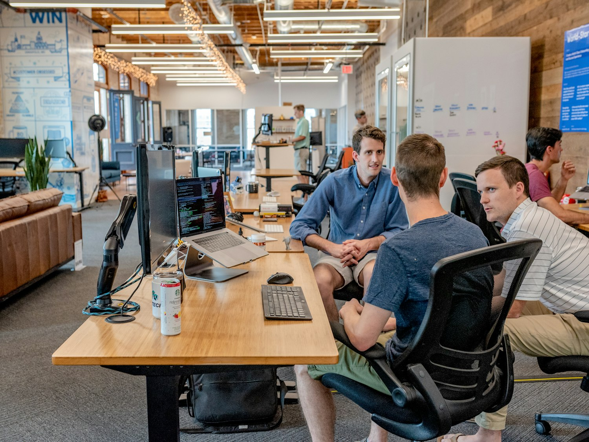
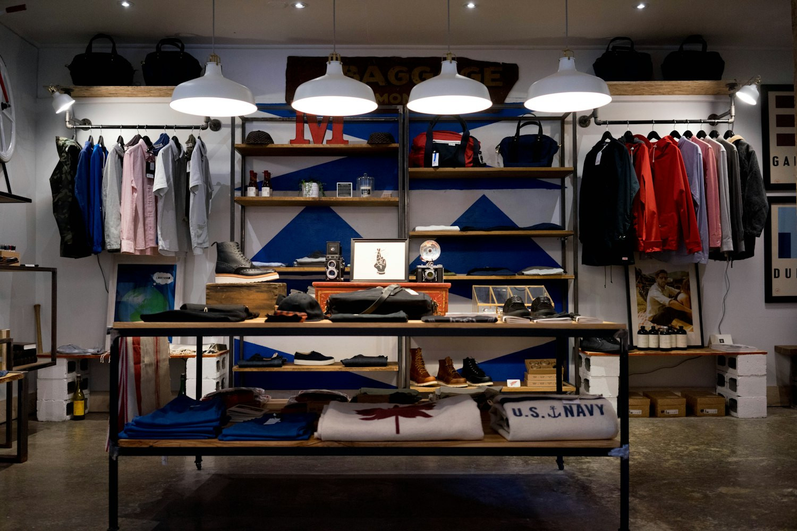
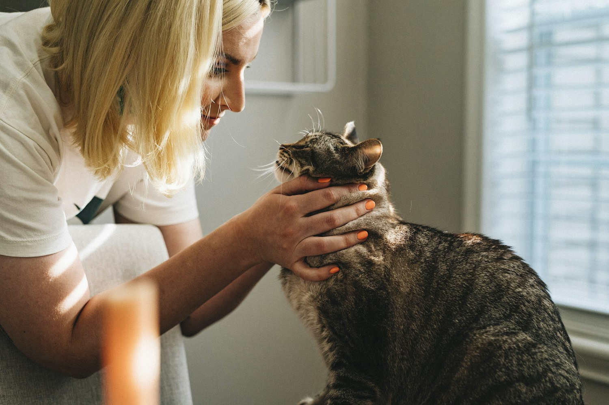
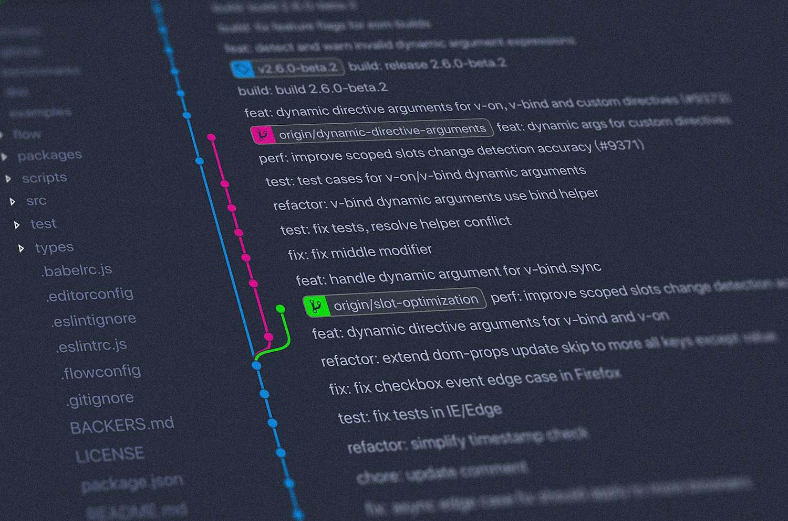

Cómo identificar negocios locales, crear una demostración web con IA y convertirla en una propuesta comercial.
Caso práctico integralDe cero a una propuesta
Presentación para jornada de intercambio y aprendizaje · Jonathan Moreno

Foto: Unsplash · uso libre
Acceso directo
Escanéalo y llévate la presentación
Apunta la cámara de tu celular al código QR para abrir esta misma presentación y los recursos que la acompañan, directamente desde tu dispositivo.
Sin apps adicionalesCámara del celularAcceso directo
Si el escáner no la reconoce, mantén el teléfono a una distancia de 20–30 cm con buena luz, o abre el enlace desde el navegador de tu celular.
Escanea con la cámara
01 · El reto
¿Y si en lugar de esperar clientes, salimos a encontrarlos?
Miles de pequeños negocios ofrecen buenos productos y servicios, pero algunos todavía no cuentan con un sitio web propio que presente su oferta y facilite el contacto.

UnsplashUnsplashUnsplash
Oportunidad: detectar una necesidad real, diseñar una solución demostrable y validar si el propietario está dispuesto a contratarla.
02 · Objetivo del caso
Una oportunidad, un prototipo y una conversación comercial
01
Investigar
Localizar negocios de una zona y categoría específica que aparentemente no tengan sitio web.
02
Crear
Diseñar una demostración web personalizada con información pública verificada y apoyo de IA.
03
Proponer
Publicar el prototipo, preparar una oferta y contactar al propietario de forma respetuosa.
La meta de aprendizaje no es prometer una venta: es construir un proceso repetible para descubrir, probar y presentar una solución.
03 · El proceso completo
Del mapa a la propuesta
1. BuscarGoogle Maps y fuentes públicas
2. FiltrarSin web propia y con potencial
3. InvestigarServicios, datos y necesidades
4. DiseñarPrototipo con IA
5. PublicarGitHub + Pages
6. OfrecerMensaje y propuesta
Cada etapa produce una evidencia: lista de prospectos, ficha del negocio, prototipo publicado y propuesta comercial.
04 · Investigación de mercado
Primero elegimos una zona y una categoría
Ejemplo de búsqueda: clínicas veterinarias, restaurantes, ferreterías, salones de belleza, talleres, hospedajes o clínicas odontológicas.
La IA ayuda a estructurar la investigación y comparar resultados; los datos de los negocios deben verificarse en la fuente.
05 · Prompt de investigación
Instrucción para organizar la búsqueda
Actúa como investigador de mercado especializado en transformación digital de pequeños negocios. Para la categoría [CATEGORÍA] en [CIUDAD], ayúdame a construir una lista de negocios encontrados en fuentes públicas. Registra nombre, ubicación, categoría, calificación, cantidad de reseñas, teléfono comercial publicado, enlace de Maps, sitio web indicado y redes sociales. Señala cuáles parecen no tener sitio web propio. No inventes resultados: marca como “pendiente de verificar” cualquier dato que no puedas confirmar. Sugiere criterios para priorizar prospectos.
La búsqueda real se realiza en Google Maps o mediante servicios/API autorizados. No se debe presentar una respuesta generada por IA como si fuera una consulta verificada.
06 · Selección del prospecto
No basta con elegir el negocio con más estrellas
Una calificación alta y muchas reseñas pueden ser señales de actividad y reputación, pero no demuestran por sí solas necesidad ni intención de compra.
Criterio ilustrativo
Ponderación
Qué observar
No tiene sitio web propio
30%
Verificar perfil, dominio y búsqueda web.
Número de reseñas
20%
Señal de interacción pública; no garantía de ventas.
Calificación promedio
15%
Reputación percibida y contexto de reseñas.
Actividad y demanda aparente
15%
Servicios, actualización y señales de operación.
Potencial de mejora digital
20%
Información dispersa, dificultad de contacto o catálogo ausente.
Los porcentajes son una rúbrica didáctica ajustable, no una medición científica del potencial comercial.
07 · Caso conductor
Ejemplo: “Veterinaria Huellitas”
Negocio ficticio para fines didácticos
Imaginemos una clínica veterinaria local con buenas reseñas, atención establecida y presencia en redes sociales, pero sin sitio web propio verificado.
Necesita explicar sus servicios.
Quiere facilitar consultas y ubicación.
Sus horarios y datos están dispersos.
Podría beneficiarse de una página clara y adaptable a móviles.

El nombre y los datos de este ejemplo son ficticios. En un proyecto real se solicita autorización antes de usar marca, fotografías o información no pública.
08 · Ficha del negocio
Recopilar y verificar antes de diseñar
Información básica
Nombre comercial y ubicación.
Teléfono y canales públicos.
Horarios confirmados.
Servicios y especialidades confirmados.
Enlaces oficiales.
Material para el prototipo
Logotipo autorizado o placeholder.
Fotografías autorizadas.
Descripción validada.
Preguntas frecuentes confirmadas.
Llamada a la acción propuesta.
Regla: no inventar precios, certificaciones, promociones, horarios, especialistas ni servicios. Lo desconocido se deja pendiente de confirmación.
09 · Análisis con IA
Convertir datos en una propuesta de valor
Analiza esta información pública y verificada del negocio: [PEGAR FICHA]. Identifica sus principales servicios, tipos de clientes, propuesta de valor y posibles dificultades que un sitio web podría ayudar a resolver. Diseña una estructura de landing page orientada a presentar servicios y facilitar el contacto. Separa hechos confirmados, hipótesis y preguntas que debemos hacer al propietario. No inventes datos.
La IA puede ayudar a formular hipótesis, pero las necesidades reales se confirman conversando con el negocio y sus clientes.
10 · Diseño de la solución
¿Qué debe incluir el sitio web demostrativo?
Inicio
Mensaje principal, imagen y propuesta de valor.
Nosotros
Presentación e historia confirmada del negocio.
Servicios
Catálogo claro, sin datos inventados.
Galería
Fotografías autorizadas o imágenes ilustrativas rotuladas.
Ubicación
Dirección y mapa enlazado.
Contacto
Teléfono y canales públicos.
Acción
Consultar, reservar o solicitar información.
Móvil
Diseño responsive y carga optimizada.
11 · Diseño web
Una demostración visual debe comunicar valor
La primera versión no necesita ser un sistema complejo. Debe mostrar una experiencia coherente, profesional y funcional.
Diseño mobile-first.
Jerarquía visual y lectura sencilla.
Identidad visual consistente.
Botones que funcionen.
Contenido honesto y verificable.
Accesibilidad y rendimiento.
12 · Prompt de desarrollo
Instrucción para construir el prototipo
Actúa como desarrollador web senior y diseñador UX/UI. Construye una landing page demostrativa para [NEGOCIO], usando HTML5, CSS3 y JavaScript. Debe ser responsive, mobile-first, moderna y accesible. Incluye inicio, presentación, servicios, galería, ubicación y contacto. Utiliza exclusivamente la información verificada que te proporcionaré. No inventes precios, certificaciones, promociones ni datos de contacto. Señala los contenidos pendientes de autorización. Añade metadatos SEO básicos, optimiza imágenes y comprueba navegación, enlaces y botones. Identifica claramente que es una demostración no oficial.
Se puede ejecutar con un asistente de código o agente de desarrollo, revisando manualmente el resultado antes de publicarlo.
13 · Revisión y validación
La IA genera; nosotros comprobamos
Pruebas funcionales
¿Se adapta a móvil?
¿Funcionan los enlaces?
¿El formulario o WhatsApp operan?
¿Carga con rapidez?
¿Hay errores de consola?
Pruebas de contenido
¿Los datos son correctos?
¿Las imágenes están autorizadas?
¿La marca se usa con permiso?
¿Se entiende que es una demo?
¿Hay información pendiente?
No publicar una página que pueda confundirse con el sitio oficial del negocio sin autorización expresa.
14 · Publicación
Del proyecto local a una URL compartible
Crear un repositorio en GitHub.
Subir HTML, CSS, JavaScript e imágenes autorizadas.
Configurar GitHub Pages.
Publicar desde la rama o carpeta seleccionada.
Probar la URL desde computadora y teléfono.
GitHub Pages es una opción para sitios estáticos. Para backend, formularios avanzados o funciones privadas se necesita otro servicio.

Ejemplo de URL: https://usuario.github.io/negocio-demo/ · Si se requiere infraestructura de Google, evaluar Firebase Hosting; no confundirlo con GitHub Pages.
15 · Marketing
No vendemos “una página”; presentamos un beneficio
La propuesta debe conectar una necesidad del negocio con un resultado que el propietario pueda comprender.
Presentar servicios en un solo lugar.
Facilitar que nuevos clientes conozcan el negocio.
Centralizar ubicación, horarios y contacto.
Transmitir una imagen profesional.
Ofrecer una base para futuras acciones digitales.
16 · Oferta comercial
¿Qué debe contener la propuesta?
Diagnóstico
Qué oportunidad observamos y qué información falta confirmar.
Solución
Qué páginas, funciones y contenido incluye el servicio.
Inversión
Precio, forma de pago, dominio, alojamiento y costos recurrentes.
Plazo
Etapas, entregas y fecha estimada.
Responsabilidades
Quién aporta textos, fotos, aprobaciones y datos.
Soporte
Mantenimiento, cambios, seguridad y condiciones de servicio.
El prototipo puede ser gratuito y limitado; el sitio final se construye con alcance, precio y autorización acordados.
17 · Contacto inicial
Mensaje de WhatsApp: breve, personalizado y sin presión
Ejemplo de mensaje
¡Hola! Buen día. Mi nombre es [NOMBRE] y me dedico al desarrollo de soluciones digitales para negocios.
Conocí su negocio y preparé una pequeña demostración de cómo podría presentarse en un sitio web, con sus servicios, ubicación y canales de contacto.
Es una propuesta visual sin compromiso y no representa un sitio oficial. ¿Le gustaría que le compartiera el enlace para conocerla?
¡Gracias por su tiempo!
Contactar por canales comerciales públicos, identificarse, respetar la privacidad y no insistir si la persona no desea recibir mensajes.
18 · Conversión
De la demostración a una venta satisfactoria
1. PermisoPregunta si desea recibir la demo
2. MostrarExplica la propuesta
3. EscucharIdentifica necesidades reales
4. CotizarAlcance, precio y plazos
5. AcordarAutorización y condiciones
6. EntregarPruebas y soporte
Una venta satisfactoria no termina al cobrar: implica cumplir lo prometido, entregar accesos, capacitar al cliente y ofrecer soporte conforme al acuerdo.
19 · Uso responsable de IA
Cuatro límites que protegen el proyecto
Veracidad
No inventar negocios, reseñas, servicios, precios ni resultados. Verificar cada dato.
Privacidad
No recopilar ni compartir datos personales innecesarios. Proteger información de clientes.
Propiedad y permisos
Usar logos, marcas, textos y fotografías con autorización o licencias apropiadas.
Transparencia
La demo no debe aparentar ser oficial. Identificarla como concepto sujeto a aprobación.
Revisar condiciones de uso de Google Maps y de cada plataforma. Evitar extracción automatizada no autorizada o mensajes masivos no solicitados.
20 · Actividad práctica
Reto: encuentra una oportunidad y conviértela en una propuesta
En equipos, trabajen con una categoría y una zona de su elección.
Parte A · Investigación
Identificar tres negocios.
Verificar si tienen web propia.
Registrar calificación y reseñas.
Seleccionar un prospecto y justificarlo.
Parte B · Solución
Preparar ficha verificada.
Diseñar estructura de landing page.
Generar un prototipo inicial.
Redactar el mensaje de contacto.
Entregable: ficha de prospecto + estructura web + propuesta de valor + mensaje comercial.
21 · Aplicación universitaria
¿Qué capacidades desarrollamos con este caso?
Pensamiento creativo
Detectar necesidades y proponer alternativas útiles.
Alfabetización en IA
Formular instrucciones, evaluar respuestas y reconocer límites.
Competencia digital
Diseñar, programar, publicar y probar un producto web.
Investigación aplicada
Buscar, contrastar, clasificar y documentar información.
Emprendimiento
Definir una oferta, conversar con clientes y validar disposición de pago.
Comunicación
Presentar una solución y explicar su valor de forma clara.
22 · Cierre
La innovación ocurre cuando una idea se pone a prueba
La IA amplía nuestra capacidad para investigar, crear y comunicar. El valor aparece cuando usamos esas capacidades para resolver una necesidad real, con evidencia, criterio y responsabilidad.
No se trata de crear páginas web por crear. Se trata de comprender un negocio, diseñar una solución pertinente y validar si realmente le aporta valor.
¿Qué oportunidad de nuestro entorno podemos investigar esta semana?
Recursos de referencia
Herramientas y plataformas para ejecutar el caso
Recurso
Uso en el proyecto
Enlace
Google Maps
Localizar y verificar negocios
maps.google.com
ChatGPT / Gemini
Análisis, prompts, ideas y textos
chatgpt.com · gemini.google.com
OpenCode
Desarrollo asistido por agentes
opencode.ai
GitHub
Repositorio y control de versiones
github.com
GitHub Pages
Publicación de sitios estáticos
pages.github.com
Firebase Hosting
Alternativa de alojamiento web
firebase.google.com
Verificar disponibilidad, límites, precios y condiciones vigentes de cada servicio antes de utilizarlo en un proyecto comercial.